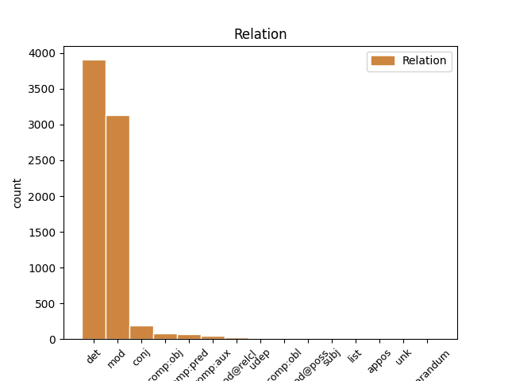
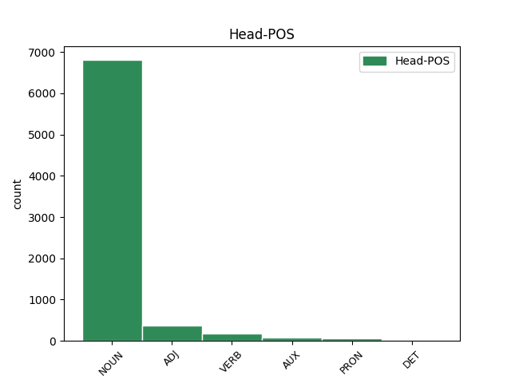
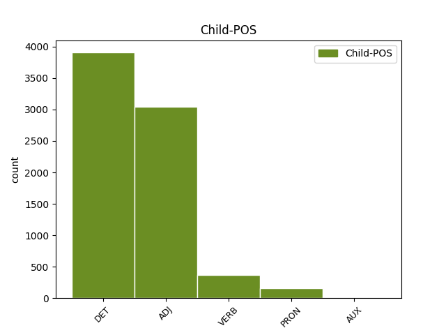

Distribution of features within this leaf



Agreement Rules sorted by frequency.
When the dependent token is None
1 - _ _ _ _ 0 _ _ _
2 Frifindelsen _ _ _ _ 0 _ _ _
3 er _ _ _ _ 0 _ _ _
4 på _ _ _ _ 0 _ _ _
5 ingen _ _ _ _ 0 _ _ _
6 måde _ _ _ _ 0 _ _ _
7 en _ _ _ _ 0 _ _ _
8 blåstempling _ _ _ _ 0 _ _ _
9 af _ _ _ _ 0 _ _ _
10 , _ _ _ _ 0 _ _ _
11 at _ _ _ _ 0 _ _ _
12 de _ _ _ _ 0 _ _ _
13 har _ _ _ _ 0 _ _ _
14 varetaget _ _ _ _ 0 _ _ _
15 deres _ _ _ _ 0 _ _ _
16 bestyrelsesarbejde _ _ _ _ 0 _ _ _
17 på _ _ _ _ 0 _ _ _
18 forbilledlig _ _ _ _ 0 _ _ _
19 vis _ _ _ _ 0 _ _ _
20 - _ _ _ _ 0 _ _ _
21 det _ _ _ _ 0 _ _ _
22 er _ _ _ _ 0 _ _ _
23 langt _ _ _ _ 0 _ _ _
24 fra _ _ _ _ 0 _ _ _
25 tilfældet _ _ _ _ 0 _ _ _
26 , _ _ _ _ 0 _ _ _
27 indskød _ _ _ _ 0 _ _ _
28 dommeren _ _ _ _ 0 _ _ _
29 under _ _ _ _ 0 _ _ _
30 sine sin DET _ Number=Plur|Number[psor]=Sing|Person=3|Poss=Yes|PronType=Prs|Reflex=Yes 31 det _ _
31 bemærkninger bemærkning NOUN _ Definite=Ind|Gender=Com|Number=Plur 0 _ _ _
32 til _ _ _ _ 0 _ _ _
33 dommen _ _ _ _ 0 _ _ _
34 . _ _ _ _ 0 _ _ _
When the dependent token is None
1 - _ _ _ _ 0 _ _ _
2 Frifindelsen _ _ _ _ 0 _ _ _
3 er _ _ _ _ 0 _ _ _
4 på _ _ _ _ 0 _ _ _
5 ingen _ _ _ _ 0 _ _ _
6 måde _ _ _ _ 0 _ _ _
7 en _ _ _ _ 0 _ _ _
8 blåstempling _ _ _ _ 0 _ _ _
9 af _ _ _ _ 0 _ _ _
10 , _ _ _ _ 0 _ _ _
11 at _ _ _ _ 0 _ _ _
12 de _ _ _ _ 0 _ _ _
13 har _ _ _ _ 0 _ _ _
14 varetaget _ _ _ _ 0 _ _ _
15 deres _ _ _ _ 0 _ _ _
16 bestyrelsesarbejde _ _ _ _ 0 _ _ _
17 på _ _ _ _ 0 _ _ _
18 forbilledlig forbilledlig ADJ _ Definite=Ind|Degree=Pos|Gender=Com|Number=Sing 19 mod _ _
19 vis vis NOUN _ Definite=Ind|Gender=Com|Number=Sing 0 _ _ _
20 - _ _ _ _ 0 _ _ _
21 det _ _ _ _ 0 _ _ _
22 er _ _ _ _ 0 _ _ _
23 langt _ _ _ _ 0 _ _ _
24 fra _ _ _ _ 0 _ _ _
25 tilfældet _ _ _ _ 0 _ _ _
26 , _ _ _ _ 0 _ _ _
27 indskød _ _ _ _ 0 _ _ _
28 dommeren _ _ _ _ 0 _ _ _
29 under _ _ _ _ 0 _ _ _
30 sine _ _ _ _ 0 _ _ _
31 bemærkninger _ _ _ _ 0 _ _ _
32 til _ _ _ _ 0 _ _ _
33 dommen _ _ _ _ 0 _ _ _
34 . _ _ _ _ 0 _ _ _
When the dependent token is None
1 " _ _ _ _ 0 _ _ _
2 Orlando _ _ _ _ 0 _ _ _
3 har _ _ _ _ 0 _ _ _
4 forårsaget _ _ _ _ 0 _ _ _
5 noget _ _ _ _ 0 _ _ _
6 af _ _ _ _ 0 _ _ _
7 en _ _ _ _ 0 _ _ _
8 revolution _ _ _ _ 0 _ _ _
9 i _ _ _ _ 0 _ _ _
10 Palermo _ _ _ _ 0 _ _ _
11 , _ _ _ _ 0 _ _ _
12 " _ _ _ _ 0 _ _ _
13 siger _ _ _ _ 0 _ _ _
14 Antonio _ _ _ _ 0 _ _ _
15 Cimino _ _ _ _ 0 _ _ _
16 fra _ _ _ _ 0 _ _ _
17 " _ _ _ _ 0 _ _ _
18 Den _ _ _ _ 0 _ _ _
19 Koordinerede _ _ _ _ 0 _ _ _
20 Bevægelse _ _ _ _ 0 _ _ _
21 mod _ _ _ _ 0 _ _ _
22 Mafiaen _ _ _ _ 0 _ _ _
23 " _ _ _ _ 0 _ _ _
24 , _ _ _ _ 0 _ _ _
25 en _ _ _ _ 0 _ _ _
26 organisation _ _ _ _ 0 _ _ _
27 , _ _ _ _ 0 _ _ _
28 der _ _ _ _ 0 _ _ _
29 er _ _ _ _ 0 _ _ _
30 startet _ _ _ _ 0 _ _ _
31 for _ _ _ _ 0 _ _ _
32 at _ _ _ _ 0 _ _ _
33 bekæmpe _ _ _ _ 0 _ _ _
34 organiseret organisere VERB _ Definite=Ind|Number=Sing|Tense=Past|VerbForm=Part 35 mod _ _
35 kriminalitet kriminalitet NOUN _ Definite=Ind|Gender=Com|Number=Sing 0 _ _ _
36 på _ _ _ _ 0 _ _ _
37 Sicilien _ _ _ _ 0 _ _ _
38 . _ _ _ _ 0 _ _ _
When the dependent token is None
1 " _ _ _ _ 0 _ _ _
2 Orlando _ _ _ _ 0 _ _ _
3 har _ _ _ _ 0 _ _ _
4 forårsaget forårsage VERB _ Definite=Ind|Number=Sing|Tense=Past|VerbForm=Part 0 _ _ _
5 noget nogen PRON _ Gender=Neut|Number=Sing|PronType=Ind 4 comp:obj _ _
6 af _ _ _ _ 0 _ _ _
7 en _ _ _ _ 0 _ _ _
8 revolution _ _ _ _ 0 _ _ _
9 i _ _ _ _ 0 _ _ _
10 Palermo _ _ _ _ 0 _ _ _
11 , _ _ _ _ 0 _ _ _
12 " _ _ _ _ 0 _ _ _
13 siger _ _ _ _ 0 _ _ _
14 Antonio _ _ _ _ 0 _ _ _
15 Cimino _ _ _ _ 0 _ _ _
16 fra _ _ _ _ 0 _ _ _
17 " _ _ _ _ 0 _ _ _
18 Den _ _ _ _ 0 _ _ _
19 Koordinerede _ _ _ _ 0 _ _ _
20 Bevægelse _ _ _ _ 0 _ _ _
21 mod _ _ _ _ 0 _ _ _
22 Mafiaen _ _ _ _ 0 _ _ _
23 " _ _ _ _ 0 _ _ _
24 , _ _ _ _ 0 _ _ _
25 en _ _ _ _ 0 _ _ _
26 organisation _ _ _ _ 0 _ _ _
27 , _ _ _ _ 0 _ _ _
28 der _ _ _ _ 0 _ _ _
29 er _ _ _ _ 0 _ _ _
30 startet _ _ _ _ 0 _ _ _
31 for _ _ _ _ 0 _ _ _
32 at _ _ _ _ 0 _ _ _
33 bekæmpe _ _ _ _ 0 _ _ _
34 organiseret _ _ _ _ 0 _ _ _
35 kriminalitet _ _ _ _ 0 _ _ _
36 på _ _ _ _ 0 _ _ _
37 Sicilien _ _ _ _ 0 _ _ _
38 . _ _ _ _ 0 _ _ _
When the dependent token is None
1 Det _ _ _ _ 0 _ _ _
2 er _ _ _ _ 0 _ _ _
3 glimrende _ _ _ _ 0 _ _ _
4 turbåde _ _ _ _ 0 _ _ _
5 , _ _ _ _ 0 _ _ _
6 og _ _ _ _ 0 _ _ _
7 specielt _ _ _ _ 0 _ _ _
8 Spækhuggeren _ _ _ _ 0 _ _ _
9 har _ _ _ _ 0 _ _ _
10 desuden _ _ _ _ 0 _ _ _
11 domineret dominere VERB _ Definite=Ind|Number=Sing|Tense=Past|VerbForm=Part 0 _ _ _
12 i _ _ _ _ 0 _ _ _
13 kapsejladser _ _ _ _ 0 _ _ _
14 og _ _ _ _ 0 _ _ _
15 år _ _ _ _ 0 _ _ _
16 for _ _ _ _ 0 _ _ _
17 år _ _ _ _ 0 _ _ _
18 været være AUX _ Definite=Ind|Number=Sing|Tense=Past|VerbForm=Part 11 conj _ _
19 den _ _ _ _ 0 _ _ _
20 stærkest _ _ _ _ 0 _ _ _
21 repræsenterede _ _ _ _ 0 _ _ _
22 klassebåd _ _ _ _ 0 _ _ _
23 ved _ _ _ _ 0 _ _ _
24 f.eks. _ _ _ _ 0 _ _ _
25 " _ _ _ _ 0 _ _ _
26 Sjælland _ _ _ _ 0 _ _ _
27 Rundt _ _ _ _ 0 _ _ _
28 " _ _ _ _ 0 _ _ _
29 . _ _ _ _ 0 _ _ _
Disagree Examples:
1 Alene _ _ _ _ 0 _ _ _
2 i _ _ _ _ 0 _ _ _
3 Hamburg _ _ _ _ 0 _ _ _
4 skulle _ _ _ _ 0 _ _ _
5 de _ _ _ _ 0 _ _ _
6 have _ _ _ _ 0 _ _ _
7 has _ _ _ _ 0 _ _ _
8 på _ _ _ _ 0 _ _ _
9 750 _ _ _ _ 0 _ _ _
10 ton ton NOUN _ Definite=Ind|Gender=Neut|Number=Plur 0 _ _ _
11 ophobet ophobe VERB _ Definite=Ind|Number=Sing|Tense=Past|VerbForm=Part 10 mod _ _
12 skrald _ _ _ _ 0 _ _ _
13 . _ _ _ _ 0 _ _ _
1 Forskellen _ _ _ _ 0 _ _ _
2 på _ _ _ _ 0 _ _ _
3 de _ _ _ _ 0 _ _ _
4 to _ _ _ _ 0 _ _ _
5 biler _ _ _ _ 0 _ _ _
6 er _ _ _ _ 0 _ _ _
7 , _ _ _ _ 0 _ _ _
8 bortset bortset VERB _ Definite=Ind|Number=Sing|Tense=Past|VerbForm=Part 0 _ _ _
9 fra _ _ _ _ 0 _ _ _
10 det _ _ _ _ 0 _ _ _
11 skrækkelige _ _ _ _ 0 _ _ _
12 " _ _ _ _ 0 _ _ _
13 hollandske _ _ _ _ 0 _ _ _
14 udtræk _ _ _ _ 0 _ _ _
15 " _ _ _ _ 0 _ _ _
16 bag _ _ _ _ 0 _ _ _
17 på _ _ _ _ 0 _ _ _
18 Cosworth'en _ _ _ _ 0 _ _ _
19 , _ _ _ _ 0 _ _ _
20 transmissionen _ _ _ _ 0 _ _ _
21 og _ _ _ _ 0 _ _ _
22 visse vis ADJ _ Degree=Pos|Number=Plur 8 conj _ _
23 udstyrsdetaljer _ _ _ _ 0 _ _ _
24 , _ _ _ _ 0 _ _ _
25 at _ _ _ _ 0 _ _ _
26 RS _ _ _ _ 0 _ _ _
27 2000 _ _ _ _ 0 _ _ _
28 har _ _ _ _ 0 _ _ _
29 en _ _ _ _ 0 _ _ _
30 fladere _ _ _ _ 0 _ _ _
31 momentkurve _ _ _ _ 0 _ _ _
32 end _ _ _ _ 0 _ _ _
33 rallyraketten _ _ _ _ 0 _ _ _
34 , _ _ _ _ 0 _ _ _
35 der _ _ _ _ 0 _ _ _
36 skal _ _ _ _ 0 _ _ _
37 sparkes _ _ _ _ 0 _ _ _
38 op _ _ _ _ 0 _ _ _
39 i _ _ _ _ 0 _ _ _
40 omdrejninger _ _ _ _ 0 _ _ _
41 for _ _ _ _ 0 _ _ _
42 få _ _ _ _ 0 _ _ _
43 alle _ _ _ _ 0 _ _ _
44 227 _ _ _ _ 0 _ _ _
45 hestekræfter _ _ _ _ 0 _ _ _
46 i _ _ _ _ 0 _ _ _
47 arbejde _ _ _ _ 0 _ _ _
48 . _ _ _ _ 0 _ _ _
1 I _ _ _ _ 0 _ _ _
2 Shell _ _ _ _ 0 _ _ _
3 har _ _ _ _ 0 _ _ _
4 man _ _ _ _ 0 _ _ _
5 ingen ingen DET _ Gender=Com|Number=Sing|PronType=Ind 6 det _ _
6 planer plan NOUN _ Definite=Ind|Gender=Com|Number=Plur 0 _ _ _
7 om _ _ _ _ 0 _ _ _
8 at _ _ _ _ 0 _ _ _
9 lade _ _ _ _ 0 _ _ _
10 en _ _ _ _ 0 _ _ _
11 del _ _ _ _ 0 _ _ _
12 af _ _ _ _ 0 _ _ _
13 den _ _ _ _ 0 _ _ _
14 blyholdige _ _ _ _ 0 _ _ _
15 98 _ _ _ _ 0 _ _ _
16 oktan _ _ _ _ 0 _ _ _
17 erstatte _ _ _ _ 0 _ _ _
18 af _ _ _ _ 0 _ _ _
19 blyfri _ _ _ _ 0 _ _ _
20 . _ _ _ _ 0 _ _ _
1 Jeg _ _ _ _ 0 _ _ _
2 fik _ _ _ _ 0 _ _ _
3 blot _ _ _ _ 0 _ _ _
4 besked _ _ _ _ 0 _ _ _
5 om _ _ _ _ 0 _ _ _
6 , _ _ _ _ 0 _ _ _
7 at _ _ _ _ 0 _ _ _
8 der _ _ _ _ 0 _ _ _
9 overhovedet _ _ _ _ 0 _ _ _
10 ikke _ _ _ _ 0 _ _ _
11 var _ _ _ _ 0 _ _ _
12 nogen nogen DET _ Gender=Com|Number=Sing|PronType=Ind 13 det _ _
13 problemer problem NOUN _ Definite=Ind|Gender=Neut|Number=Plur 0 _ _ _
14 . _ _ _ _ 0 _ _ _
1 Det _ _ _ _ 0 _ _ _
2 et-motorede et-motorede ADJ _ Degree=Pos|Number=Plur 5 mod _ _
3 Cessna _ _ _ _ 0 _ _ _
4 172 _ _ _ _ 0 _ _ _
5 fly fly NOUN _ Definite=Ind|Gender=Neut|Number=Sing 0 _ _ _
6 med _ _ _ _ 0 _ _ _
7 plads _ _ _ _ 0 _ _ _
8 til _ _ _ _ 0 _ _ _
9 fire _ _ _ _ 0 _ _ _
10 personer _ _ _ _ 0 _ _ _
11 havde _ _ _ _ 0 _ _ _
12 da _ _ _ _ 0 _ _ _
13 retning _ _ _ _ 0 _ _ _
14 mod _ _ _ _ 0 _ _ _
15 en _ _ _ _ 0 _ _ _
16 række _ _ _ _ 0 _ _ _
17 fire _ _ _ _ 0 _ _ _
18 meter _ _ _ _ 0 _ _ _
19 høje _ _ _ _ 0 _ _ _
20 buske _ _ _ _ 0 _ _ _
21 . _ _ _ _ 0 _ _ _